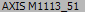

import datetime import string import errorConst import currentTime import fileLog def PlayTab(): if not exists(Pattern().similar(0.89)): click(Pattern().similar(0.90)) gr = find(Pattern().similar(0.89)) pane = find () dragDrop(gr,pane) while True: if exists(,20): dragDrop(gr,pane) fileLog.Log("playDrag&Drop_04.09-04.16",'a',errorConst.no_error) else: fileLog.Log("playDrag&Drop_04.09-04.16",'a',errorConst.error_1) break try : fileLog.cnt = 0 fileLog.status = None fileLog.Log("playDrag&Drop_04.09-04.16",'a',errorConst.no_error) PlayTab() except FindFailed: fileLog.Log("playDrag&Drop_04.09-04.16",'a',errorConst.error_1) try: for a in range(0,100,1): PlayTab() temp_cnt = a fileLog.status = temp_cnt fileLog.Log("playDrag&Drop_04.09-04.16",'a',errorConst.error_1) except FindFailed: fileLog.Log("playDrag&Drop_04.09-04.16",'a',errorConst.error_1) for a in range(0,3,1): run("C:\sikuli\dump\proxyDump.bat") App.close("G2Client.exe") wait(10) App.open("C:\IDIS Solution Suite\Client\G2Client.exe") while not exists(Pattern().similar(0.89)): wait(5) click(Pattern().targetOffset(-108,13)) type(Key.ENTER) while not exists(Pattern().similar(0.85)): wait(2) runScript("C:\sikuli\script\playDrag&Drop.sikuli") ''' for a in range(0,9,1): temp_cnt = a fileLog.status = temp_cnt fileLog.Log("playDrag&Drop_02.25-03.05",'a',errorConst.error_1) runScript("C:\sikuli\script\playDrag&Drop.sikuli") '''